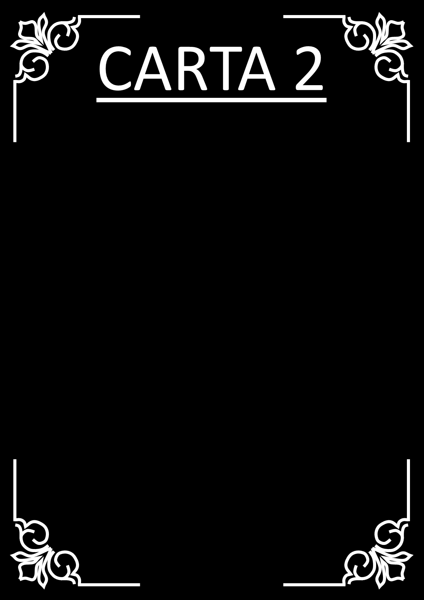

Quais outros cômodos você deixou de visitar?
Você não iniciou no quarto do Pedro, pois não há nada à sua esquerda.
A porta mais distante do 2º quarto vago seria o escritório, logo, ele não foi o segundo cômodo a ser visitado.
Logo, como o escritório não foi visitado, você não iniciou pelo banheiro.